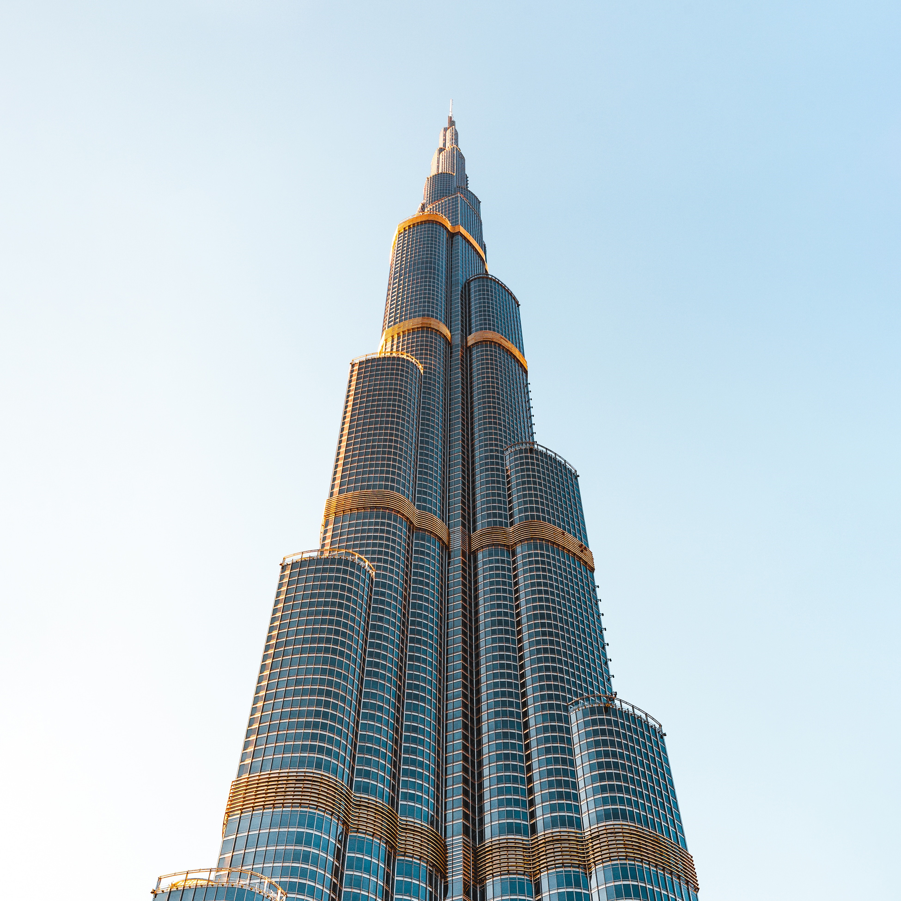

Wonder Tours
Modern Wonders of the World
New7Wonders of the World was a campaign started in 2000 to choose Wonders of the World from a selection of 200 existing monuments. The popularity poll was led by Canadian-Swiss Bernard Weber and organized by the New7Wonders Foundation based in Zurich, Switzerland, with winners announced on 7 July 2007 in Lisbon.
Learn moreNatural Wonders of the World

While ancient and modern works of architecture fill the lists of the Seven Wonders of the World, there are sites of natural beauty that are worth discovery. The Seven Natural Wonders organization came up with its own list to raise awareness of and protect the beauty of the natural places.
Learn moreAncient Wonders of the World

The Seven Wonders of the World or the Seven Wonders of the Ancient World is a list of remarkable constructions of classical antiquity given by various authors in guidebooks or poems popular among ancient Hellenic tourists.
Learn more